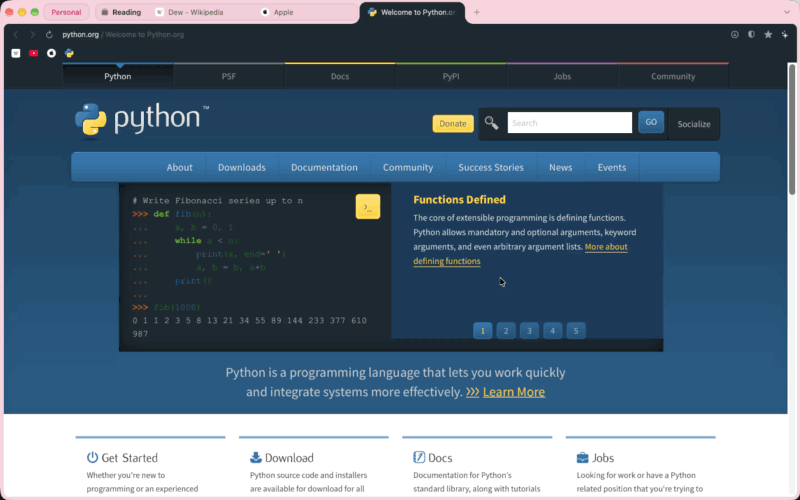
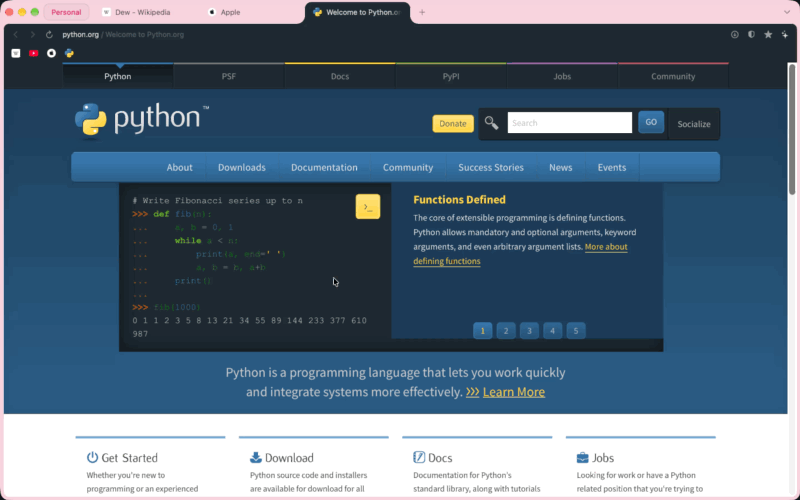
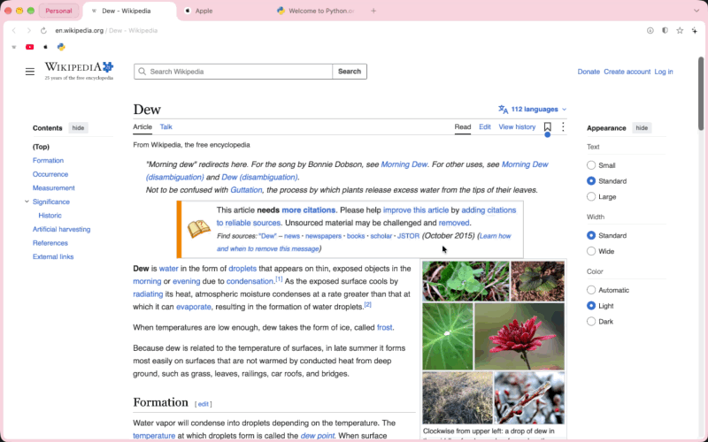

A quick tour of the things worth knowing. Everything here is on the Mac; most of it works the same on iPhone and iPad, where the menu (⋯) has the same options.
A space is a separate browser inside Dew: its own tabs, history, cookies and logins. Sign in to your work Google account in Work and your own in Personal, and neither knows about the other.
Switch spaces with ⌃1, ⌃2 and so on, or click the space's name at the top left.
Make a new one from the space menu › New Space…, and give it a name, an icon and a colour.
Put your tabs down the side with ⌘S, or in Settings › Appearance › Tabs. ⌘S again puts them back on top.
Hide them for the whole window with ⌥⌘S. Move the pointer to the top (or the left edge, with tabs on the side) and they slide back in.
Tab groups and pinned tabs

Groups keep related tabs together in a tray with a name.
Right-click a tab › Add to New Group. Add more with right-click › Add to Group, or drag them in.
Click the group's name to collapse it to one chip, and again to open it.
Right-click the name to rename it, open a new tab in it, or close the whole group.
Tip: in Settings › General you can have middle-click open links into the current tab's group.
Pinned tabs are for the sites you always have open.
Right-click a tab › Pin Tab, or press ⌥⌘P. It becomes a small icon next to the space name.
⌘W doesn't remove it. It just puts it away: the page is unloaded to save memory, and next time you click it, it opens where you pinned it.
To get rid of one, unpin it first.
Chat

Press ⌘E (or the ✨ in the address bar). Chat opens beside the page you're on, and that page is already shared with it.
Ask anything: "summarise this", "what does this mean", "compare these two". Anything you've selected on the page goes along too.
Press + to bring in other open tabs, from any space. ✕ on a tab's chip stops sharing it.
Chat can also tidy up for you, like closing duplicate tabs or grouping them, and there's an Undo if it gets it wrong.
The first time, Dew asks which AI to use (Settings › AI Chat): Claude or ChatGPT with your own key or account, or a model running on your Mac. Nothing is sent anywhere until you ask a question.
Click Add to Dew in the address bar (where Chrome's "Add to Chrome" would be).
Dew shows what the extension will be able to see and change. Click Add Extension.
Its button appears in the address bar. Click it for its popup, right-click it for its options.
Manage them in Settings › Extensions: turn one off, hide its button, or remove it. Extensions never run in private browsing. Plenty work (Dark Reader, content blockers…), but some don't yet, 1Password included, because they rely on parts of Chrome that Safari's engine doesn't have. If you use 1Password, its app's Universal Autofill (⌘\) fills logins in Dew instead.
Privacy

Most of this is on from the start, so there's nothing you need to do. To change it:
The shield in the address bar turns ad and tracker blocking off and on. Turn it off if a site doesn't work properly.
Settings › Privacy has the rest: leave them alone.
Cookie banners: Dew answers them for you. Reject automatically is the default; you can choose Accept, or
Clear automatically: per space, clear history or cookies daily, weekly, monthly or whenever you quit Dew.
Tracking tags on links (utm_…, fbclid and the rest) are removed before the page opens.
For browsing that leaves nothing behind, open a private tab (⇧⌘N). Dew turns grey while you're in private browsing, and everything is forgotten when you close the last private tab.
Keyboard shortcuts worth learning
⌘T / ⌘W
New tab / close tab (pinned tabs are put away, not closed)